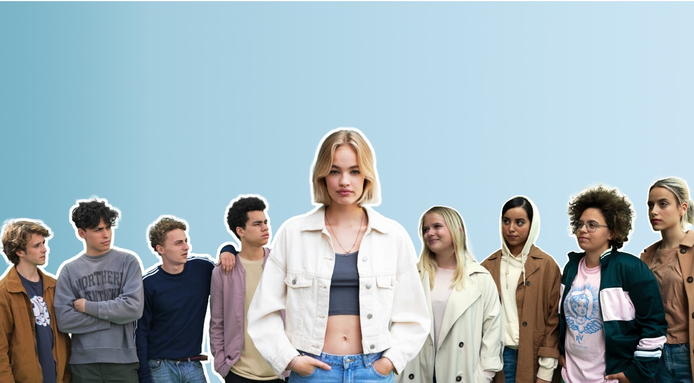

Welkom op de officiële fanpagina van SKAM Belgium, ookwel WtFOCK genoemd!
Op deze site kun je alles vinden over de vlaamse serie wtfock. In deze actuele serie over het leven van tieners worden veel maatschappelijke thema’s behandeld zoals: racisme, homofobie, overmatig alcoholgebruik, COVID-19 en meer. WtFock is een remake van de noorweegse serie Skam. Na het grote succes van Skam zijn er 7 remakes van gemaakt, waar WtFock er dus een van is.
Op deze site kan je de volgende dingen vinden:
Officiële youtube-account van WtFock:

